Histories
Matches 1 to 16 of 16
| # | Thumb | Description | Linked to |
|---|---|---|---|
| 1 | 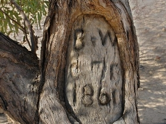 | Expedition Application Arthur Alexander Addis' application for Burke and Wills expedition | |
| 2 | 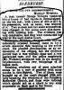 | George Willows robbed reported in The Argus (Melb) 15th Jun 1880 | |
| 3 | 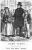 | Hard Times An account of the lives of Margaret SPENCER (nee ARMSTRONG) and her daughter Jessie SPENCER, both of whom lived past 100yrs, as told by their Grandson .. Mark Hollett. | |
| 4 | 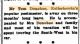 | Intent to tour the South West by car Three months long service leave | |
| 5 | 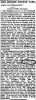 | John Willows a jury member reported in the Argus (Melb) 22nd Feb 1989 | |
| 6 | 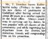 | Leaving Kellerberrin after 20 yrs service Bound for Guildford Post Office | |
| 7 | 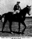 | Manolive An account of the successes of the racehorse Manolive purchase by A.A.Spencer in 1934 for 140 guineas | |
| 8 |  | Norman Tate Obituary | |
| 9 | Omega Passenger Lising | ||
| 10 | Rayland Truck Anecdotally designed by 'Ray Smith' - 1962 | ||
| 11 | 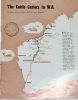 | The Cattle Carters in W.A. [#1]
An article by Jeffery Kemp, published in the BP Accelerator Oct., 1960 No. 205 | |
| 12 | 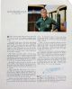 | The Cattle Carters in W.A. [#2]
Mr. Ray Smith, Manager of W.H.Brown and Son, the company that operates the 'Cattle Train'. | |
| 13 | 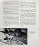 | The Cattle Carters in W.A. [#3]
Roadside repairs on the 'low flying Beaver', Mr. Neville Hellwig inspects a broken axle. | |
| 14 | 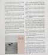 | The Cattle Carters in W.A. [#4] Emus are a common sight along the track to Anna Plains. | |
| 15 |  | The GADE Story as related to Edward (Ted) George GADE (10.10.1943) by letter 30th July 2007 | |
| 16 | V6 Capri Alans project |